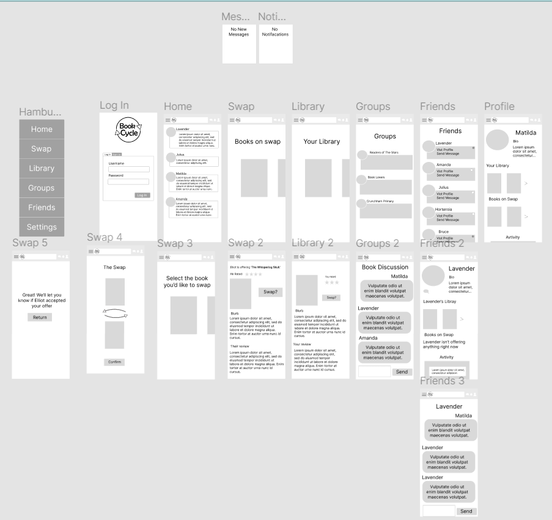

On Tuseday I began prototying a lo-fi mobile version of my website. Mostly it was just copy pasting assests from my other figma file but I did add a new feature that was mobile spesfific which was a scroll that would be used in a number of places in the app including the swap feature and the library I also made sure the layout was more portrait orenintated (hense the scroll being needed) and more mobile friendly in general.
